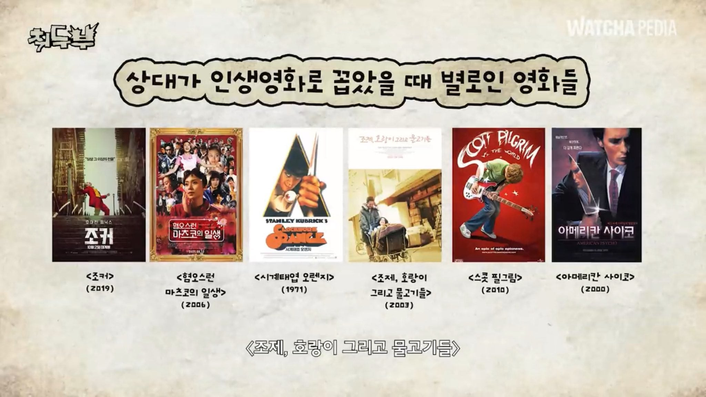
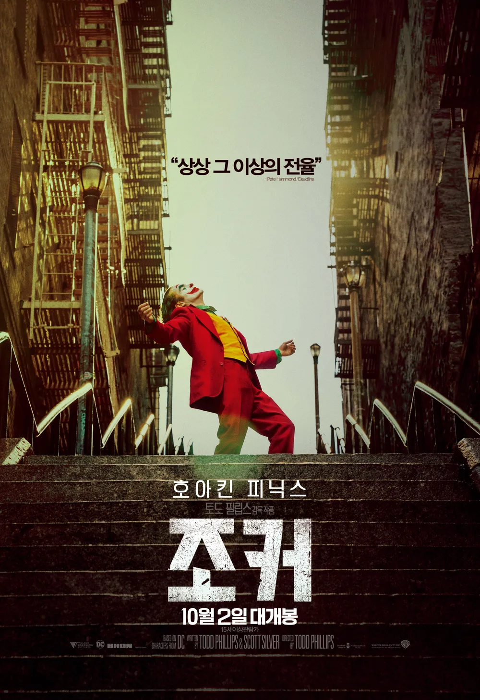
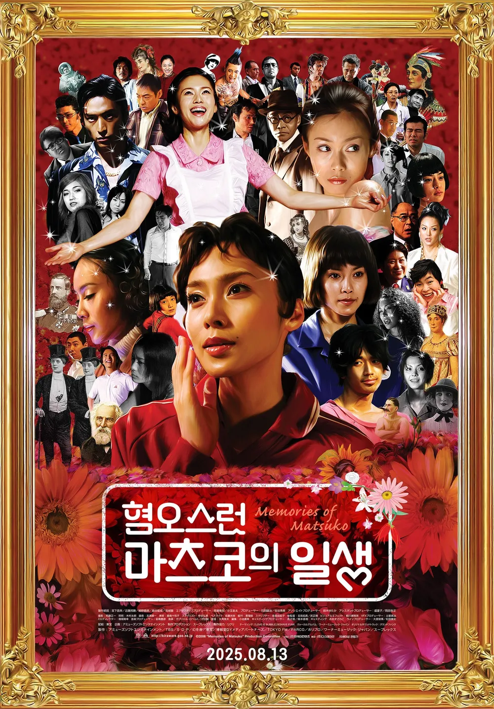
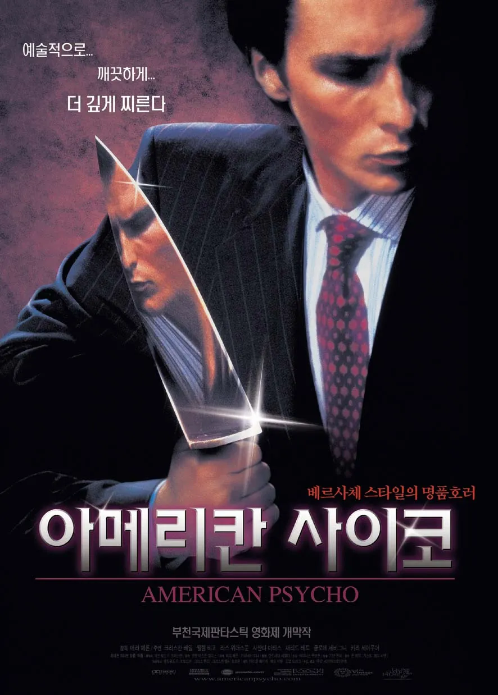
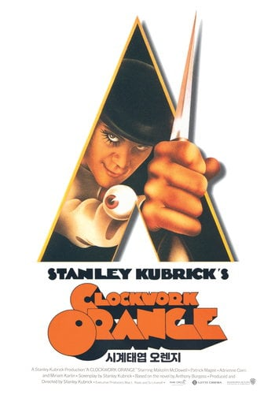
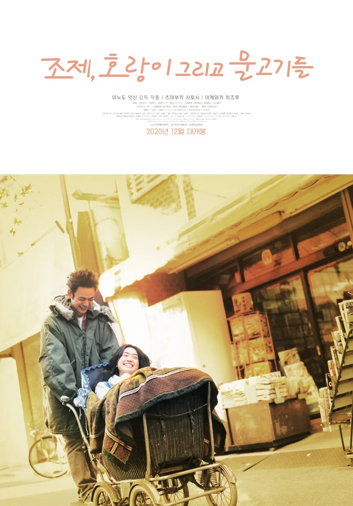

이중에본거있음?






이중에본거있음?
일단 조커는 인싸들이 보면 이해 안되는 영화긴 함 ㅋㅋ
찐따 감수성 있어야 이해되고
명작인 것임
일단 라라랜드, 어바웃타임이라고 하는 사람하고는 안맞음
돌이켜보면 인생영화라고 할만큼 인상깊게 본 건 리들리 스콧의 몇몇 영화들인듯
의외로 에일리언 커버넌트도 좋았고
영화들은 좋은영화들이긴한데 인생급까지 가기엔 좀 아쉬운듯
라라랜드 인생영화로 꼽는 사람 중에 정상인 못 본듯
다 보긴했는데 내 인생영화는 칠드런 오브 맨이야
쿵푸허슬
남들의 인생영화로 그 사람 전체를 평가하는 사람이 더 별로인거 같음.
`게임 많이하면 살인과 범죄를 더 저지른다.` 와 다를바가 뭐임?
여자한테 이상형 물어봤는데 존경할수있는남자요 이러면 짜치잖아
멘헤라 여자들 인생영화 원픽이 마츠코임 ㅋㅋ
요즘은 에에올 아님?
내가아는 맨헤라도 인생영화가 마츠코인디 신기허네
파이트 클럽 ㅇㄷ?
시계태엽 오렌지 배경이 뭔가 좋았음
조제는 왜
반지의 제왕. 밥 먹으면서 봐도 되고, 술 마시면서 봐도 되고, 누워서 봐도 되고. 내용이야 패스하고 인생 나이테 늘어나도 계속 보는건 저 시리즈뿐이네
ㅇㄱㄹㅇ.........
밥먹으면서
술먹으면서
술먹고나서
과자먹으면서
그냥 볼거없을때
생각났을때
언제든 봐도좋은게 반지 시리즈(드라마는 아님ㅋ 안쳐줌ㅋ)
조제는 왜?
조커는 거의 다 봤을거 같은데
이퀄리브리엄이 채고시다
매트릭스는가라!
라스 폰 트리에가 없는걸로 봐서 그나마 양심적인 리스트네
소림축구,쿵푸허슬 미만 잡
조커는 내가 인생 젤 힘든 시기에 뵈서 그런지 보자마자 카타르시스 느낌
블레이드러너2049
도대체 왜 저것이 인생영화일까 궁금해지는 리스트인데 이유를 알게됐을때 그사람을 더 좋아하게 될지는 물음표일듯 ㅋㅋㅋ
ㅋㅋㅋㅋ 인생영화라기보다 이런영화를 좋아하는 나를 좋아하는 뭐그런애들 이란거?
대부, 어바웃타임, 노트북, 호프, 행복을찾아서
월광보합, 선린기연
뭐뭐를 탈출한 100세 노인
그냥 감명깊게 봤다
저는 해운대가 인생영화에요
난 황산벌 좋아했는데
무간도1
홍콩영와 레전드
82톤 메지영
시계태엽오렌지는 소설로만 읽었고 나머지는 다 안봤네...
제목까지는 들어본듯
조제호랑이는 왜?...
월터의상상은현실이된다
파이트 클럽 ㅇㄷ?
영화 공부할때 시계태엽오렌지 본 것 말고는 없네